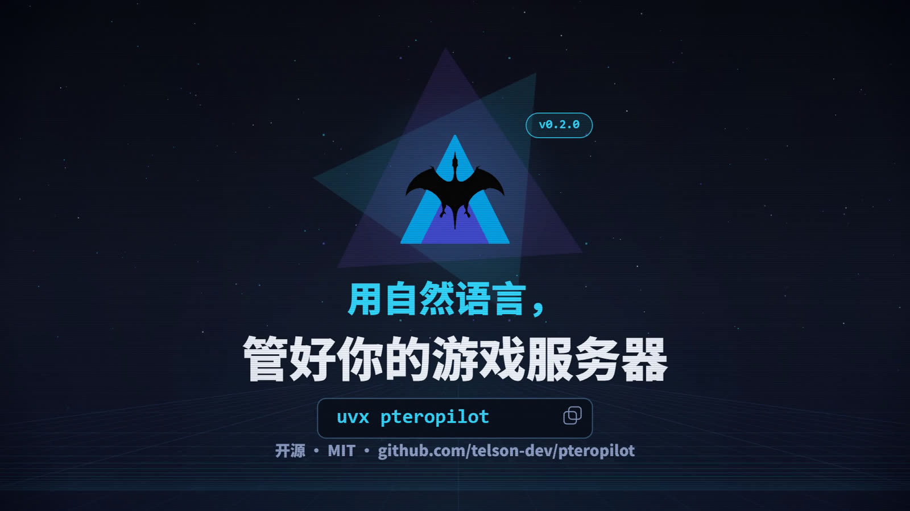

telson
telson独立开发者 · Independent Developer
把想法做成
能用的软件。
我写 AI 工具、自动化脚本和小而美的网页。代表作 Pteropilot —— 一个开源的 MCP 服务器，让 Claude、Cursor 用一句中文就能管理 Pterodactyl / Pelican 游戏服务器面板。
Python
TypeScript
AI / MCP
自动化
静态站

$
精选作品
Pteropilot
开源的 MCP 服务器。不用交出 SSH，也不用登录面板——在对话里说一句话，服务器就动起来了。
接单
需要人帮你把东西做出来？
代码交付、异步沟通、说清楚就干活。小单当天开工，大单先出方案再报价。
>_
自动化脚本与爬虫
把重复劳动交给代码：数据采集、批量处理、定时任务、报表生成、Excel 自动化。
¥199 起</>
网页与工具站
产品官网、落地页、内部工具。响应式、加载快、直接能上线，源码完整交付。
¥499 起◈
AI / MCP 工具定制
把你的业务接进 Claude、Cursor：MCP Server、Agent 工具链、模型调用与自动化流程。
¥499 起联系
有需求？复制邮箱，写封邮件给我。
把「要做什么、给谁用、什么时候要」写清楚发过来，我会先回一个方案和报价。 学生项目和开源项目可以聊价格。